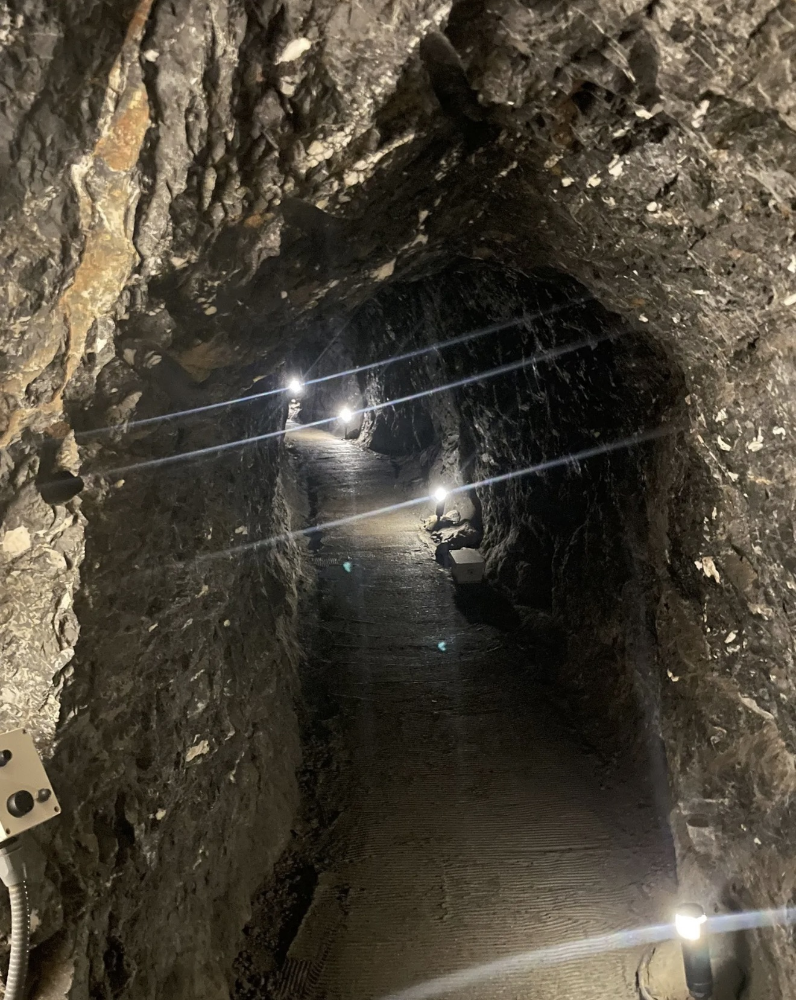
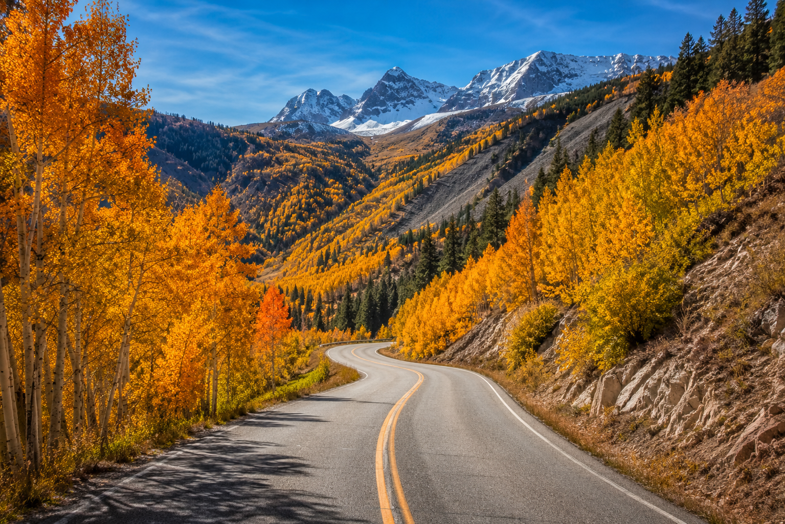
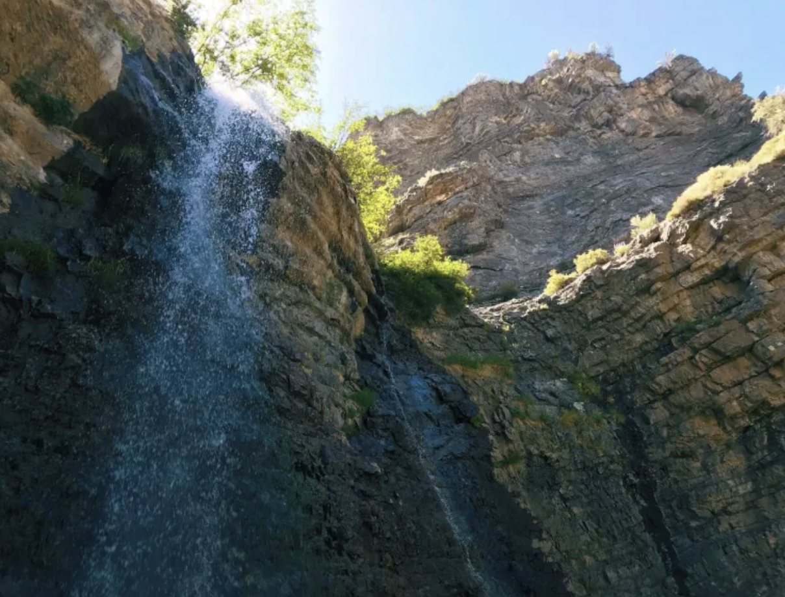
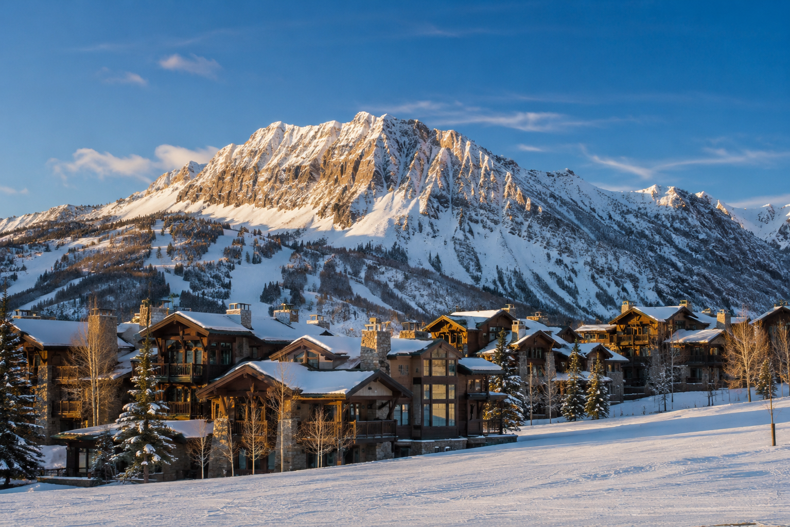
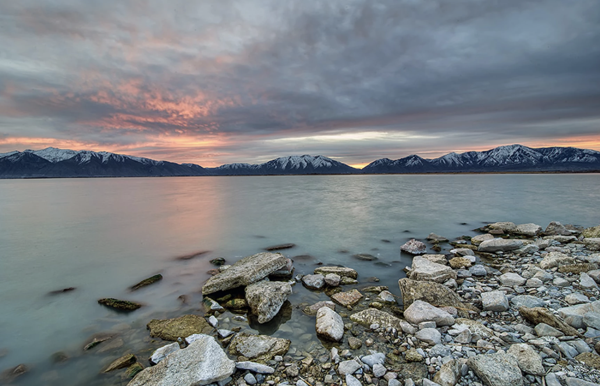
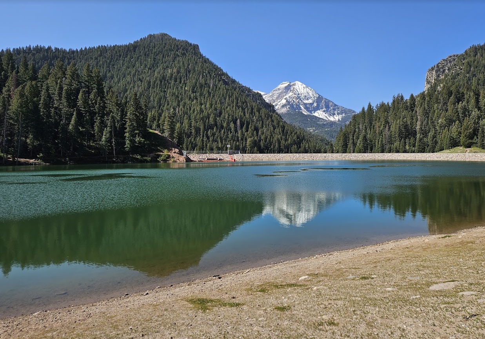
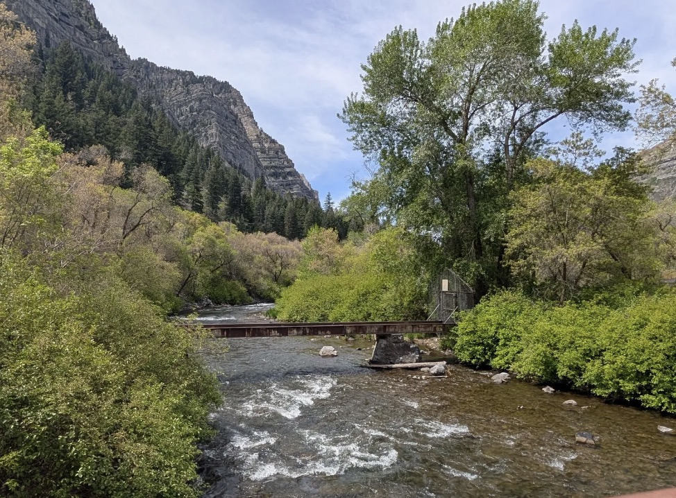
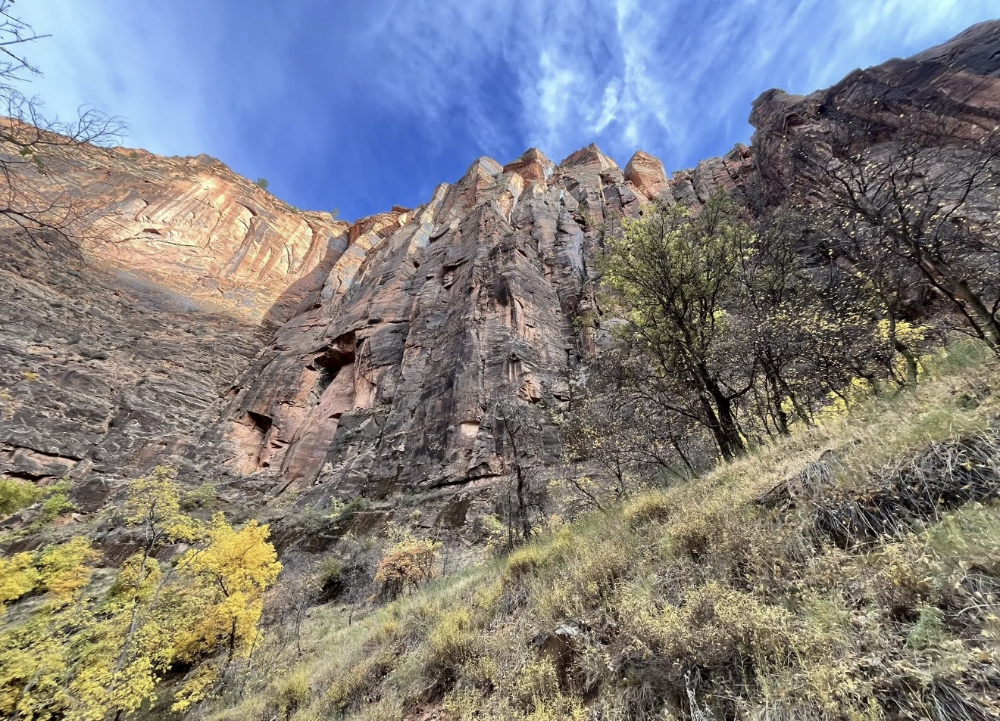

You're 20 minutes from world-class hiking, skiing, and canyon access. People don't just move here for a house. They move here for this.








The right neighborhood puts you close to everything that matters to you. Let's talk about what that looks like.
Talk to Kelsie.